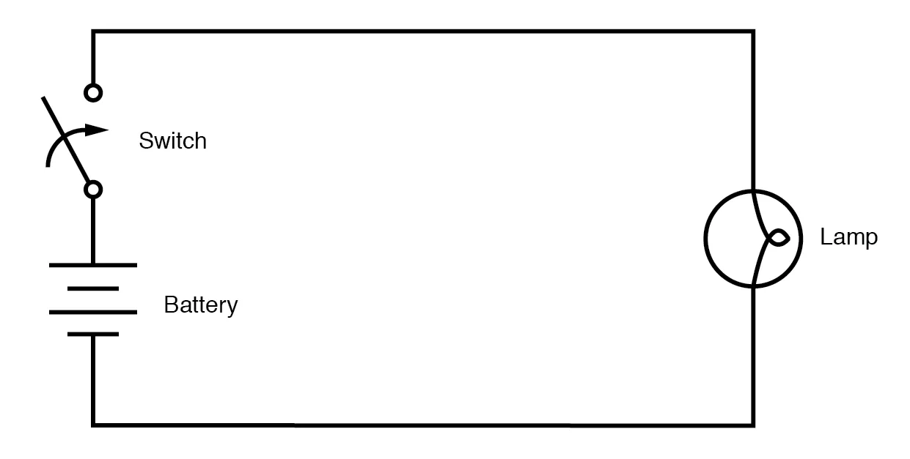
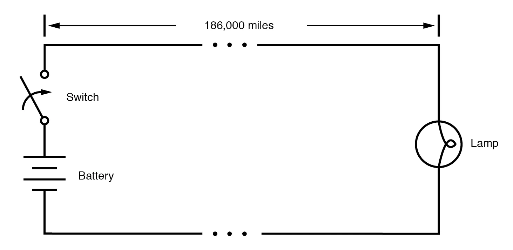
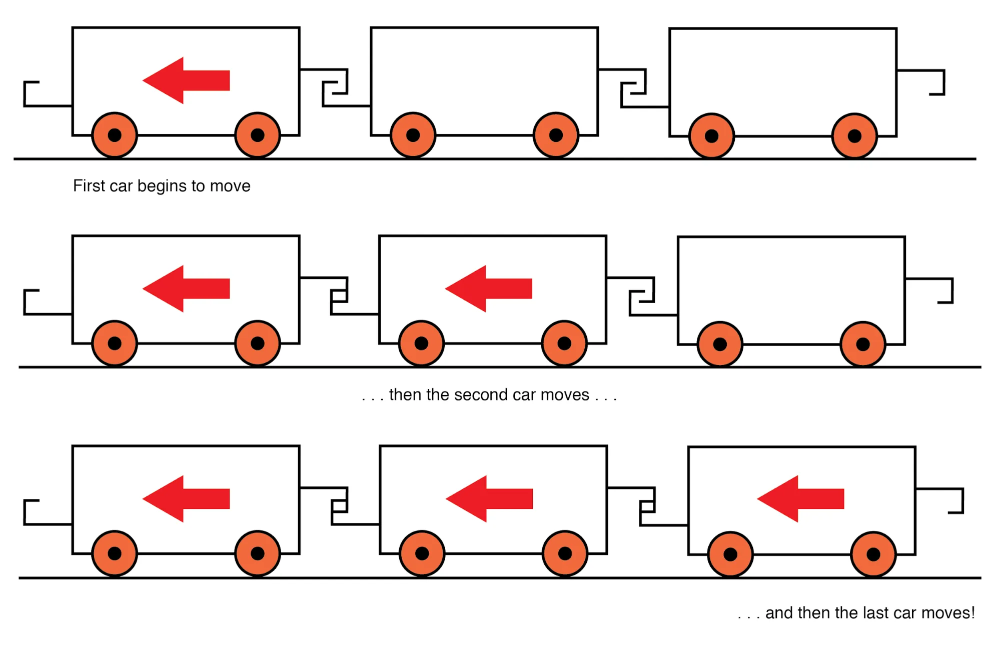
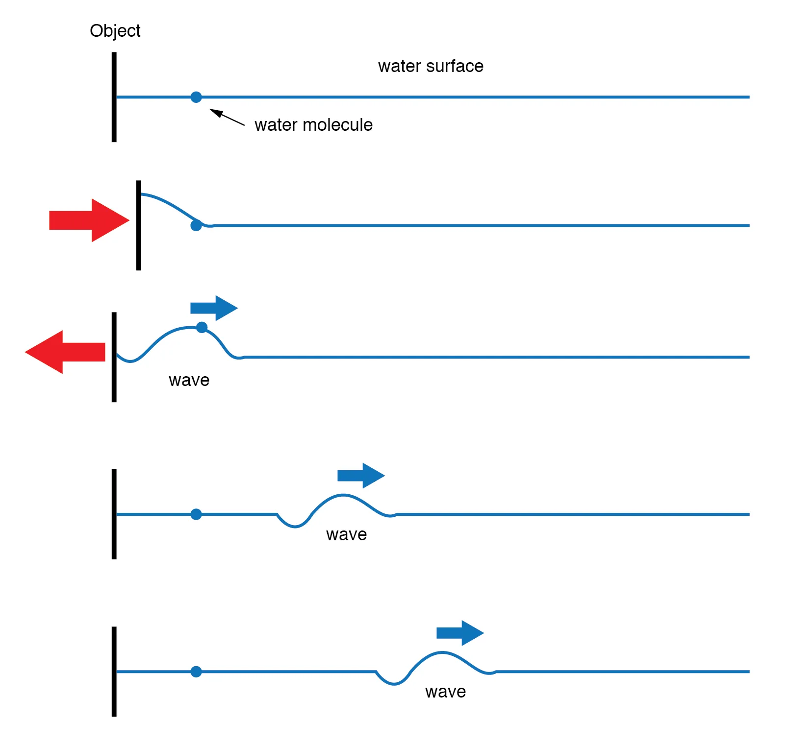

Suppose we had a simple one-battery, one-lamp circuit controlled by a switch. When the switch is closed, the lamp immediately lights. When the switch is opened, the lamp immediately darkens: (Figure below)

Lamp appears to immediately respond to switch.
Actually, an incandescent lamp takes a short time for its filament to warm up and emit light after receiving an electric current of sufficient magnitude to power it, so the effect is not instant. However, what I’d like to focus on is the immediacy of the electric current itself, not the response time of the lamp filament.
For all practical purposes, the effect of switch action is instant at the lamp’s location. Although electric charge carriers move through wires very slowly, the overall effect of electric charge carriers pushing against each other happens at the speed of light (approximately 186,000 miles per second!).
What would happen, though, if the wires carrying power to the lamp were 186,000 miles long? Since we know an electric signal has a finite speed (albeit very fast), a set of very long wires should introduce a time delay into the circuit, delaying the switch’s action on the lamp: (Figure below)

At the speed of light, lamp responds after 1 second.
Assuming no warm-up time for the lamp filament, and no resistance along the 372,000 mile length of both wires, the lamp would light up approximately one second after the switch closure.
Although the construction and operation of superconducting wires 372,000 miles in length would pose enormous practical problems, it is theoretically possible, and so this “thought experiment” is valid. When the switch is opened again, the lamp will continue to receive power for one second of time after the switch opens, then it will de-energize.
One way of envisioning this is to imagine the electric charge carriers within a conductor as rail cars in a train: linked together with a small amount of “slack” or “play” in the couplings. When one rail car (an electric charge carrier) begins to move, it pushes on the one ahead of it and pulls on the one behind it, but not before the slack is relieved from the couplings.
Thus, motion is transferred from car to car (from one electric charge carrier to another) at a maximum velocity limited by the coupling slack, resulting in a much faster transfer of motion from the left end of the train (circuit) to the right end than the actual speed of the cars (electric charge carriers): (Figure below)

Motion is transmitted successively from one car to next.
Another analogy, perhaps more fitting for the subject of transmission lines, is that of waves in water. Suppose a flat, wall-shaped object is suddenly moved horizontally along the surface of the water, so as to produce a wave ahead of it.
The wave will travel as water molecules bump into each other, transferring wave motion along the water’s surface far faster than the water molecules themselves are actually traveling: (Figure below)

Wave motion in water.
Likewise, the electric charge carriers motion “coupling” travels approximately at the speed of light, although the electric charge carriers themselves don’t move that quickly. In a very long circuit, this “coupling” speed would become noticeable to a human observer in the form of a short time delay between switch action and lamp action.
REVIEW: